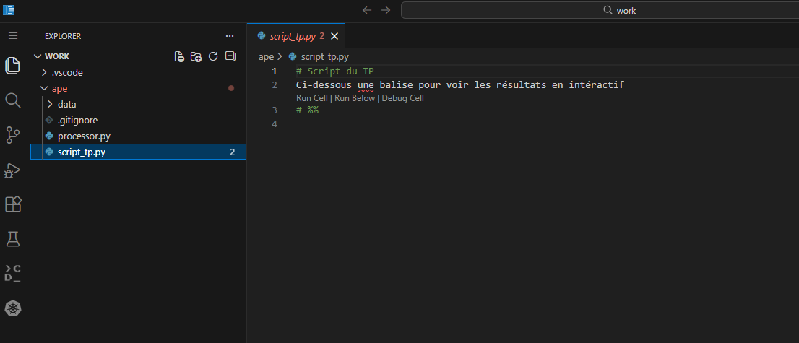
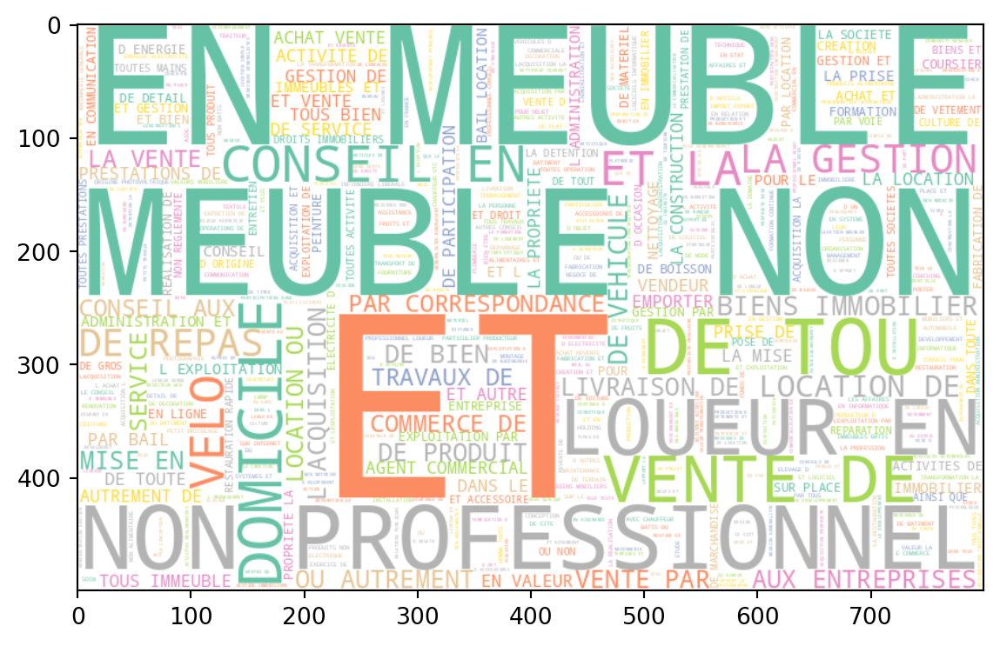
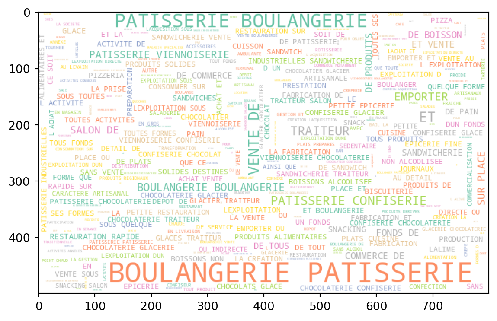
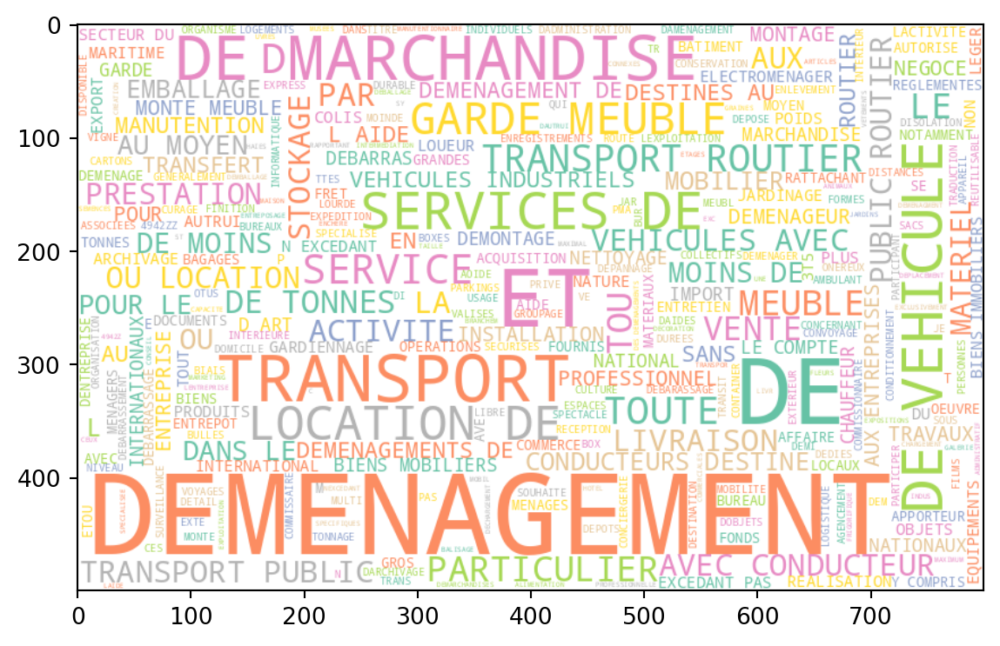
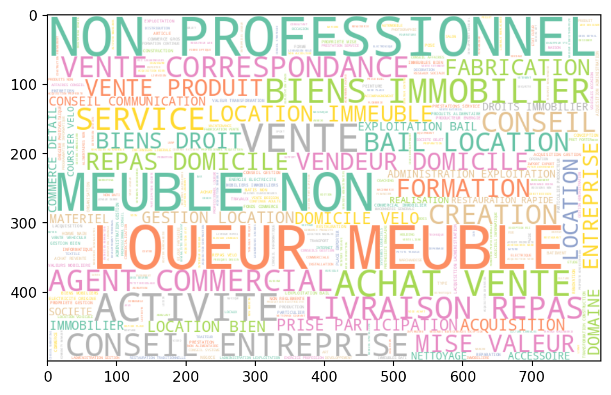

Application 2: classification automatique de textes
Cette application illustrera certains apports des outils du NLP pour la codification automatique des déclarations d’activité dans la nomenclature des activités françaises. Vous pourrez réaliser ce TP dans un service préconfiguré du SSP Cloud en cliquant sur le lien ci-dessous :
Ce tutoriel n’a pas vocation à introduire aux principaux concepts du NLP (tokenisation, sac de mot, embedding, etc.) mais à être une introduction pratique à la thématique de la classification textuelle. Pour découvrir les concepts centraux du NLP, se référer au cours de Python pour la data science de l’ENSAE.
Objectifs
Ce tutoriel se propose d’illustrer la problématique de la classification automatique en mobilisant un algorithme d’apprentissage supervisé de type FastText, à partir des données issues des déclarations Sirene.
L’idée de ce tutoriel est de classer des déclarations d’entreprises dans une nomenclature générique des activités productives. Celle-ci permet de produire de nombreuses statistiques économiques sectorielles sur le tissu productif français.
L’Insee ayant vocation à produire des statistiques agrégées sur de nombreuses questions, cette approche constitue l’un des principaux cas d’application du NLP pour l’Institut dans des domaines aussi divers que la classification dans une nomenclature d’activités (NAF), une nomenclature de professions (PCS), de produits (COICOP), de lieux géographiques, etc.
Comment passe-t-on d’une déclaration en langage naturel, qui fait sens pour un entrepreneur, à une représentation plus générique, et forcément plus simpliste, de l’activité d’une entreprise, qui fait sens à une institution statistique et espérons, pour le débat public ? Grâce à des algorithmes de classement ad hoc qui permettent d’extraire une information à partir de libellés textuels. Historiquement l’Insee utilisait des règles déterministes de classement à partir d’un algorithme nommé Sicore, une IA symbolique qui classait à partir de règles métiers préconfigurée.
Avec l’avènement du machine learning, la possibilité d’entraîner un algorithme apprenant par induction plutôt que de manière déductive, est apparue être une voie d’investissement intéressante pour l’Insee. L’objet de ce TD est d’illustrer la démarche adoptée avec cette approche à partir d’un modèle un peu plus simple que celui mis en oeuvre à l’Insee mais reprenant les principales caractéristiques de celui-ci.
Environnement de travail
Le services VSCode préconfiguré contient :
les données dans un dossier “data”
un module de preprocessing
un script script_tp.py vierge où écrire votre code (la puce # %% permet une utilisation intéractive à l’instar des notebooks Jupyter).

Exploration du jeu de données
Le code pour lire les données est directement fourni :
Le premier exercice a vocation à illustrer la manière classique « d’entrer » dans un corpus de données textuelles.
La démarche n’est pas particulièrement originale mais permet d’illustrer les enjeux du nettoyage de texte.
Exercice 1
Lancer le code ci-dessous pour préparer votre environnement de travail :
# Charge la bibliothèque spaCy pour le traitement du langage naturel (NLP)import spacy# Télécharge le modèle français pour spaCy (nécessaire pour l'analyse morphosyntaxique en français)os.system("python -m spacy download fr_core_news_sm")# Charge la bibliothèque NLTK pour le traitement du texteimport nltk# Télécharge le tokeniseur "punkt_tab" de NLTK (pour la segmentation en phrases/tokens)nltk.download('punkt_tab')# Télécharge la liste des stopwords français/anglais de NLTK (mots vides comme "le", "la", "the", etc.)nltk.download('stopwords')
Créer une fonction filter_train_data qui filtre les lignes du df dont le libellé d’activité contient un pattern (mot) donné. Cette fonction aussi doit afficher (print) le nombre de lignes concernées. Tester avec “data science” et “boulanger”.
Faire une fonction graph_wordcloud pour afficher le wordcloud de notre corpus dans son ensemble et de certaines catégories de la nomenclature pour comprendre la nature de notre corpus.
Retirer les stopwords à partir de la liste des mots disponibles dans SpaCy.
Aide
import spacyfrom nltk.tokenize import word_tokenizenlp = spacy.load("fr_core_news_sm")stop_words = nlp.Defaults.stop_wordsstop_words =set(stop_words)# Function to remove stopwordsdef remove_stopwords(text): word_tokens = word_tokenize(text) filtered_text = ...return' '.join(filtered_text)def remove_single_letters(text): word_tokens = word_tokenize(text) filtered_text = ...return' '.join(filtered_text)# Apply the function to the 'text' columntrain['text_clean'] = (train['text'] .apply(remove_stopwords) .apply(remove_single_letters))
Refaire quelques uns des nuages de mots et étudier la différence avant nettoyage.
Dans une démarche exploratoire, le plus simple est de commencer par compter les mots de manière indépendante (approche sac de mot). Par exemple, de manière naturelle, nous avons beaucoup plus de déclarations liées à la boulangerie que liées à la data science:
filter_train_data(train, "data science").head(5)
Nombre d'occurrences de la séquence 'data science': 54
nace
text
Code
Libellé
3183
7219Z
SERVICES CONSEILS ET FORMATIONS DANS LES DOMA...
7219Z
Recherche-développement en autres sciences phy...
8357
6202A
ACTIVITE DE CONSEIL INFORMATIQUE ET TECHNOLOGI...
6202A
Conseil en systèmes et logiciels informatiques
21510
6202A
ACTIVITE DE CONSEIL INFORMATIQUE ET TECHNOLOGI...
6202A
Conseil en systèmes et logiciels informatiques
33647
6202A
PRESTATIONS INFORMATIQUES LOGICIELS CONSEIL...
6202A
Conseil en systèmes et logiciels informatiques
35135
6202A
ACTIVITE DE CONSEIL INFORMATIQUE ET TECHNOLOGI...
6202A
Conseil en systèmes et logiciels informatiques
filter_train_data(train, "boulanger").head(5)
Nombre d'occurrences de la séquence 'boulanger': 1928
nace
text
Code
Libellé
90
1071C
BOULANGERIE PATISSERIE VIENNOISERIE
1071C
Boulangerie et boulangerie-pâtisserie
107
1071C
BOULANGERIE PATISSERIE FABRICATION
1071C
Boulangerie et boulangerie-pâtisserie
153
1071C
BOULANGERIE PATISSERIE GLACES CONFISERIES BOIS...
1071C
Boulangerie et boulangerie-pâtisserie
314
1071C
BOULANGERIE PATISSERIE VIENNOISERIE CONFISE...
1071C
Boulangerie et boulangerie-pâtisserie
487
1071C
BOULANGERIE PATISSERIE ACHAT VENTE ET MAINT...
1071C
Boulangerie et boulangerie-pâtisserie
Les wordclouds peuvent servir à rapidement visualiser la structure d’un corpus. On voit ici que notre corpus est très bruité car nous n’avons pas nettoyé celui-ci:

Pour commencer à se faire une idée sur les spécificités des catégories, on peut représenter le corpus de certaines d’entre elles ? Arrivez-vous à inférer la catégorie de la NAF en question ? Si oui, vous utilisez sans doute des heuristiques proches de celles que nous allons mettre en oeuvre dans notre algorithme de classification.


Néanmoins, à ce stade, les données sont encore très bruitées. La première étape classique est de retirer les stop words et éventuellement des termes spécifiques à notre corpus. Par exemple, pour des données de caisse, on retirera les bruits, les abréviations, etc. qui peuvent bruiter notre corpus.
Voici le wordcloud de notre corpus tout entier une fois cette première étape de nettoyage achevée :

Premier algorithme d’apprentissage supervisé
Nous avons nettoyé nos données. Cela devrait améliorer la pertinence de nos modèles en réduisant le ratio signal/bruit. Nous allons généraliser notre nettoyage de texte en appliquant un peu plus d’étapes que précédemment. Nous allons notamment raciniser nos mots.
Pour cela, il suffit de charger le module processor.py mis à disposition dans votre environnement de travail. Le code de nettoyage est directement fourni:
from processor import Preprocessorpreprocessor = Preprocessor()# Preprocess data before training and testingTEXT_FEATURE ="text"Y ="nace"df = train.copy()df = preprocessor.clean_text(df, TEXT_FEATURE).drop('text_clean', axis ="columns")df.head(2)
nace
text
Code
Libellé
0
8220Z
mission ponctuel aid plateform
8220Z
Activités de centres d'appels
1
8553Z
inspecteur automobil
8553Z
Enseignement de la conduite
Pour développer votre code, utilisez un échantillon des données pour éviter les temps de calculs trop long au début.
Encoder les labels et découper les données en train, val et test.
Aide
# Pour l'encoding : from sklearn.preprocessing import LabelEncoder# Pour le split :from sklearn.model_selection import train_test_split
Nous allons utiliser torchTextClassifiers (ttc) pour entraîner notre modèle. ttc est un framework de codification automatique, construit sur torch et qui permet de d’entraîner des modèles de codification automatique. ttc va ici nous permettre d’entraîner un modèle de type Fasttext, mais sans passer par la vieille librairie archivée par Meta. À noter que ttc est une librairie opensource, développée et maintenue par l’Insee (unité SSPLab).
La première étape consiste à instancier un tokenizer. Nous allons utiliser ici le tokenizer basique de la méthodologie Fasttext (découpage en mots, ngrams de mots et ngrams de caractères).
Instancier un tokenizer NGramTokenizer (essayer à partir de la documentation de torchTextClassifiers - ou en reprenant le code ci-dessous pour les moins courageux)
Aide
from torchTextClassifiers.tokenizers.ngram import NGramTokenizertokenizer = NGramTokenizer( min_count=2, # On considère un mot s'il est trouvé au moins 2 fois dans le corpus min_n=2, max_n=4, # On fait des 2grams, 3grams et 4grams de caractères len_word_ngrams=2, # On fait des 2grams de mots num_tokens=10000, # Nombre max de tokens considérés dans le vocable training_text=X, # Jeu d'entraînement du tokenizer)
Etudiez le code dans l’aide ci-dessous et lancez-le. Malheureusement, l’entraînement d’un bon modèle prend du temps et de la ressource (GPU) : ici, nous vous donnons le code pour faire toutes les étapes vous-même mais, au lieu de faire l’entraînement (code en commentaire), nous vous proposons de télécharger un modèle déjà entraîné par nos soins (avec les mêmes données et les mêmes configurations que celles du TP).
Aide
# Set model configs ---------------from torchTextClassifiers import ModelConfigimport numpy as np# Embedding dimensionembedding_dim =64# Count number of unique labelsunique_values, counts = np.unique(y, return_counts=True)num_unique =len(unique_values)model_config = ModelConfig( embedding_dim=embedding_dim, num_classes=num_unique)# Instanciate a ttc model (nammed "classifier") ---------------from torchTextClassifiers import torchTextClassifiersclassifier = torchTextClassifiers( tokenizer=tokenizer, model_config=model_config)# Set the training configs ---------------from torchTextClassifiers import TrainingConfig# Training params (torch style)training_config = TrainingConfig( num_epochs=30, batch_size=8, lr=1e-3, patience_early_stopping=7, num_workers=0, trainer_params={'deterministic': True})# Training (too long) !# classifier.train(# X_train, # y_train,# training_config,# X_val, # y_val,# verbose=True# )# Download a pre-trained instead to make it faster : # Download the modelbase_url ="https://minio.lab.sspcloud.fr/projet-formation/nouvelles-sources/model_ape"files = ["metadata.pkl", "model_checkpoint.ckpt", "tokenizer.pkl"]import subprocessforfilein files: subprocess.run(["curl", f"{base_url}/{file}","--output", f"model_ape/{file}","--silent","--fail", # Fail on HTTP errors"--location"# Follow redirects ], check=True)# Load itclassifier = torchTextClassifiers.load("model_ape")
Calculer l’accuracy du modèle.
Tester le modèle sur quelques libellés de professions :
searched_professions = np.array(["Conseil datascience", "Concésion dans l'automobile", "Concession automobile", "peintre"])
Chargement du modèle :
2026-01-16 17:05:55 - torchTextClassifiers.model.model - 🔹 No categorical variable network provided; using only text embeddings.
/opt/hostedtoolcache/Python/3.13.11/x64/lib/python3.13/site-packages/pytorch_lightning/utilities/parsing.py:210: Attribute 'loss' is an instance of `nn.Module` and is already saved during checkpointing. It is recommended to ignore them using `self.save_hyperparameters(ignore=['loss'])`.
2026-01-16 17:05:55 - torchTextClassifiers.torchTextClassifiers - Model checkpoint loaded from model_ape/model_checkpoint.ckpt
2026-01-16 17:05:55 - torchTextClassifiers.torchTextClassifiers - Model loaded successfully from model_ape
Evaluation du modèle :
Test accuracy: 0.810
Testons le modèle sur quelques libellés d’activité :
🔍 Profession recherchée : Conseil datascience
🏷️ Profession(s) trouvée(s) : Activités spécialisées, scientifiques et techniques diverses
📊 Confiance : 0.50
🔍 Profession recherchée : Concésion dans l'automobile
🏷️ Profession(s) trouvée(s) : Activités spécialisées de design
📊 Confiance : 0.13
🔍 Profession recherchée : Concession automobile
🏷️ Profession(s) trouvée(s) : Activités spécialisées de design
📊 Confiance : 0.22
🔍 Profession recherchée : peintre
🏷️ Profession(s) trouvée(s) : Travaux de peinture et vitrerie
📊 Confiance : 1.00
Pour aller plus loin, introduction au MLOps
On utilise dans cette application un modèle de Machine Learning (ML) pour prédire l’activité des entreprises à partir de texte descriptifs. Les méthodes de ML sont quasiment indispensables pour traiter du texte, mais utiliser des modèles de ML pour servir des cas d’usage réels demande de respecter un certain nombre de bonnes pratiques pour que tout se passe convenablement, en particulier:
Tracking propre des expérimentations
Versioning des modèles, en même temps que des données et du code correspondants
Mise à disposition efficace du modèle aux utilisateurs
Monitoring de l’activité du modèle servi
Réentraînement du modèle
Une introduction à ces bonnes pratiques, auxquelles on fait régulièrement référence à travers le terme MLOps, est donné dans cette formation (dépôt associé).